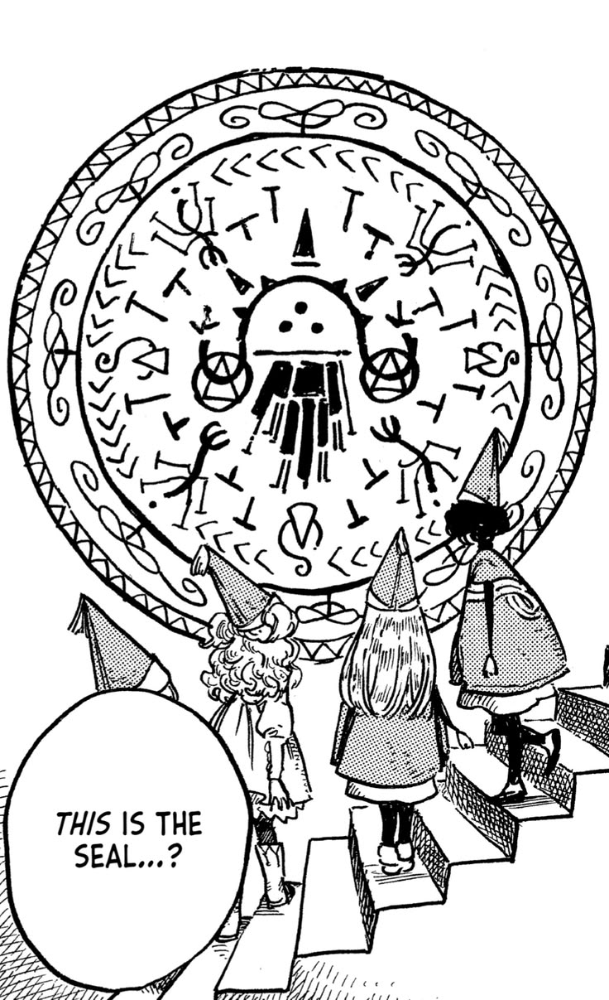

Sobre la obra
Nombre: Witch Hat Atelier
Nombre original: Tongari Boushi no Atelier
Autora: Kamome Shirahama
Género: Fantasía y aventura
Temporadas y episodios
En esta sección se encuentra la información correspondiente a la adaptación animada de Witch Hat Atelier, sus episodios y su lanzamiento.
Curiosidades
Una de las características más particulares de Witch Hat Atelier es su sistema de magia. En lugar de realizar hechizos únicamente mediante palabras o poderes, los magos utilizan dibujos y símbolos.
Los círculos mágicos deben realizarse cuidadosamente y diferentes combinaciones de símbolos pueden producir distintos resultados.

Estilo artístico
La obra destaca por sus ilustraciones detalladas y una estética inspirada en los cuentos clásicos de fantasía, los libros ilustrados y los grabados.
Contacto
Próximamente podrás dejar aquí tus comentarios y consultas relacionadas con Witch Hat Atelier.